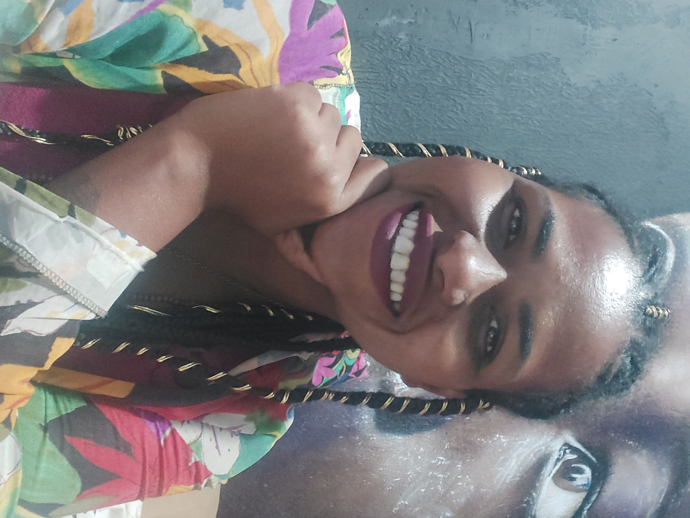

Rarusse Quintiliano
Professora de inglês e estudante de tecnologia e programação
Sou professora de inglês e estudante iniciante em programação. Minha paixão por aprender me levou a explorar novos
horizontes, e acredito firmemente que juntos, em coletivo, podemos moldar um mundo mais saudável e igualitário.
Além disso, adoro ler, pintar, assistir filmes e passar tempo de qualidade com amigos e família.
Seja bem vinde ao meu portfólio, onde compartilho minhas experiências, projetos e jornada de aprendizado.
Sinta-se à vontade para explorar e entrar em contato comigo!
Além disso, adoro ler, pintar, assistir filmes e passar tempo de qualidade com amigos e família.
Seja bem vinde ao meu portfólio, onde compartilho minhas experiências, projetos e jornada de aprendizado.
Sinta-se à vontade para explorar e entrar em contato comigo!